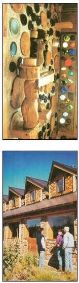

Unabashedly, I admit to two great love affairs in my life: with Jaki, my wife of 30 years, and (this one is shared with Jaki) with cordwood masonry construction.
This ancient building style-many references date it back 1,000 years-has known a substantial rebirth since the first articles about it appeared in Mother Earth News a quarter of a century ago. In cordwood construction, walls are constructed of log-ends-short logs, 12 to 24 inches long-mortared up transversely in the wall, similar to the way firewood is stacked.
In Canada, it's commonly known as stackwall building. Log-ends can be cut from wood that is unsuitable for other purposes, such as fire-killed standing wood, ends and pieces from a sawmill, logging slash, and curved branches and trunks. Portland cement, mixed with sand, sawdust and builder's lime, generally serves as the mortar between the "courses" of cordwood.
In 1974, Jaki and I bought land in northern New York to pursue our vision of a self-reliant lifestyle. In those days, the "natural building" structure of choice was the log cabin. We had helped with constructing a log home, and we knew from experience that fitting and hefting the large logs was a lot of hard work. We also knew that in our area, 15 miles from the Canadian border, we would not find logs thick enough to provide adequate insulation against the harsh climate. And building another internal insulated frame inside the log walls seemed to defeat the purpose of minimizing the use of materials.
About this time, we stumbled upon the April 1974 issue of National Geographic, which contained a picture of a cordwood home in Skowhegan, Washington. Immediately, we knew that we had found a method of building that satisfied our criteria. Building with cordwood masonry would be cheaper and more efficient than building with conventional methods, as we could salvage "unsuitable wood" to use for construction and we could build the home ourselves. Cordwood's thick, stalwart walls also would buffer this region's temperature extremes. However, it was probably the unique beauty of these buildings that sealed the deal for us.
Over the past quarter century, Jaki and I have built four homes and innumerable outbuildings with cordwood masonry. In November 2002, we completed a beautiful new sunroom addition to Earthwood, our primary home and the home of Earthwood Building School, where we give workshops on cordwood construction. When people ask us why we're so enthusiastic about cordwood masonry, I am fond of listing what I call the "5-E Advantages."
1. Ease of construction. To lay up a cordwood wall, the builder need never handle anything heavier than a firewood log. Mortar is easily mixed in a wheelbarrow. We have found that the novice owner-builder readily learns the skills. For years, I have been saying that children, grandmothers and beavers can all build cordwood homes ... and they do!
2. Economy. Log-ends can be cut from less-than-perfect or salvaged wood-fire-killed standing wood, ends and pieces from the sawmill, logging slash, and curved branches and trunks unsuitable for lumber. Even old fence rails and driftwood have been used.
3. Energy advantage. Cordwood combines insulation with thermal mass better than any other aboveground building system I can call to mind. The secret is the unique insulated mortar matrix that is woven around all of the log-ends. The mortar does not conduct heat directly through the wall because of an insulated cavity built into the middle third of the wall's width. With a 16-inch-thick wall, for example, we use a 6-inch-wide insulated space between the inner and outer mortar joints. The insulation can be sawdust and lime (at a 12-to-1 ratio), which results in about R-3 of insulation value per inch of thickness. Other loose-fill insulation, such as perlite or vermiculite, also can be used. (Cellulose, which can trap moisture, is not recommended, and we no longer use fiberglass because of its high energy consumption during manufacture, as well as the danger of inhaling the glass fibers.)
Unlike lightweight, wood-frame walls, cordwood walls contain tremendous thermal mass in the mortar. The log-ends themselves also possess both insulative and thermal mass characteristics. Because of this, cordwood homes do not suffer from wild temperature fluctuations; they are easy to keep warm and stay comfortably cool in the summer.
4. Environmental harmony. Cordwood masonry makes use of natural, indigenous materials-and even "waste" destined for the landfill. To further mitigate the environmental impacts of construction, some cordwood builders concerned with concrete mortar's high embodied energy use a cob mortar (clay, sand and straw) instead. My most-recent cordwood construction book, Cordwood Building: The State of the Art, discusses this innovative technique.
5. Esthetics. This acceptable spelling allows me to complete the "5-E" advantages of cordwood. To me, esthetics is just as important as any other consideration, because, ultimately, we must feel good about the house we call home. Jaki and I never tire of the appearance of our walls, which com bine the warm colors of wood with the pleasing relief and texture of fine stone masonry. Cordwood offers an almost limitless outlet for creative expression. We like to incorporate special features into the walls, such as shelves and storage nooks. Colorful bottles embedded in the walls admit sunlight in all colors of the spectrum (see photo). Our sunroom addition features an Easter Island motif on one of the cordwood panels.
Cordwood accommodates three structural styles quite easily.
Round or curved-wall buildings. A round house makes good use of a quirk of geometry, enclosing a desired space with the least amount of materials. Birds, bees and beavers-as well as so-called "primitive" societies-know this instinctively.
Our round Earthwood house is a good example of using cordwood masonry as a load-bearing structure. The lower courses at Earthwood support two full stories of cordwood masonry plus an extremely heavy earthen roof-sometimes covered with 3 feet or more of snow-a testament to the cordwood's impressive compressive strength.
Stackwall corners. For a rectilinear house without a heavy post-and-beam frame, stackwall corners can be built of special squared log-ends called quoins. This system enables builders to make walls 24 inches thick or more. The downside to using this method is that, like the load-bearing curved-wall construction, all the cordwood work must be done under the open sky, putting the builder at the mercy of the weather's whims.
Cordwood infill with a post-and-beam frame. Although I am partial to the circular design, building a strong post-and-beam frame from heavy, rough-cut timbers and putting the roof on prior to commencing the cordwood work offers compelling advantages. Not only does it afford protection from the elements, as you can work on the cordwood infill with a roof overhead, but it also may more easily gain the approval of your local building inspector, as he or she may not be convinced of cordwood masonry's suitability as a load-bearing medium. For building in seismic (earthquake-prone) areas, the post-and-beam style is the only method of cordwood building I would advise.
Several builders I know have managed to combine the round style with the post-and-beam method by building a 16-sided post-and-beam frame and using cordwood infill. From the outside, such houses look round; inside, they have almost the same advantages of space-enclosing geometry as the truly round house does.
If you're interested in learning more about cordwood masonry, additional books and Web sites on the subject are available. Along with my books and Web site, www.cordwoodmasonry.com, another helpful site is www.daycreek.com, which lists other resources, tips and tricks helpful to a neophyte builder.
Practiced throughout the ages, cordwood masonry construction is experiencing a renaissance as hands-on home builders learn of its simplicity, energy efficiency and unique beauty. But with any unconventional building technique, cordwood construction comes with its own set of challenges. Here, we've addressed the most frequently asked questions.
Won't the log-ends rot? If basic care is taken, log-ends will not rot. Fungi, which need constant moisture to thrive, cause wood to rot. Cordwood breathes wonderfully along its end-grain, foiling fungi's propagation. To ensure long-lived log-ends: 1) Debark the wood; 2) Don't place wood against wood (this can trap moisture); 3) Don't use wood that already shows signs of deterioration; 4) Design your roof with at least a 12- to 16-inch overhang; and 5) Set your bottom course of cordwood at least 6 inches off the ground, on a good masonry foundation of stone, block or concrete.
What kind of wood should I use? Select light and airy woods like white cedar, white pine, cottonwood, poplar, spruce or larch (tamarack). These shrink (and expand) less than dense woods such as maple, oak, elm, beech, and some of the heavy Southern pines. Denser woods can be used only if special building-design strategies are used.
How long should I dry the wood? Light, airy woods should be dried at least a year, if you can wait that long. This will greatly minimize shrinkage. Dry dense wood just a few weeks, as there is the very real danger of wood expansion with dry hardwoods that get wet from driving rain. Wood expansion is a more serious problem than shrinkage; expansion can break up the wall, whereas wood shrinkage can be attended to in several ways. Research the chosen wood's shrinkage characteristics before deciding upon a drying time.
What mortar mix should be used? For more than 20 years, we have had good success with a mix of 9 sand, 3 sawdust, 3 lime and 2 Portland cement (equal parts by volume). Use sawdust from a light softwood rather than from a dense hardwood. First, pass the sawdust through a half-inch screen. Then, overnight, completely saturate it by placing it in a soaking vessel such as an old bathtub or an open-topped metal drum. The purpose of the sawdust is to slow mortar-curing time, which reduces mortar shrinkage. If softwood sawdust is not available, use a commercially available cement retarder. Also, use hydrated or Type-S lime, also called builder's lime, which makes the mix more plastic, and, as the lime calcifies, makes the mortar stronger over time. The Portland cement (either Type I or Type II) lends strength to the mix.
|
ROB ROY Author Roy Rob and his wife, Jaki, used the age-old technique of cordwood masonry to construct the main living quarters and outbuildings on their homestead in West Chazy, New York. |
 ROB ROY Cordwood building naturally lends itself to whimsical expression. Above: Colorful glass bottles transcend their former lives, reincarnated as orbs of art and light in a cordwood wall. Below: Visitors at Sage Mountain Center tour the Center's cordwood-constructed lodge. |
ROB ROY/SAGE MOUNTAIN CENTER Mortared, square log-ends called quoins provide stability and structure, while preserving the character of this hand-hewn home. |
|
ROB ROY Jaki and Rob Roy, pictured in their cordwood home. |
SAGE MOUNTAIN CENTER A cordwood wall under construction at the Sage Mountain Center, a holistic living center near Whitehall, Montana. |
|